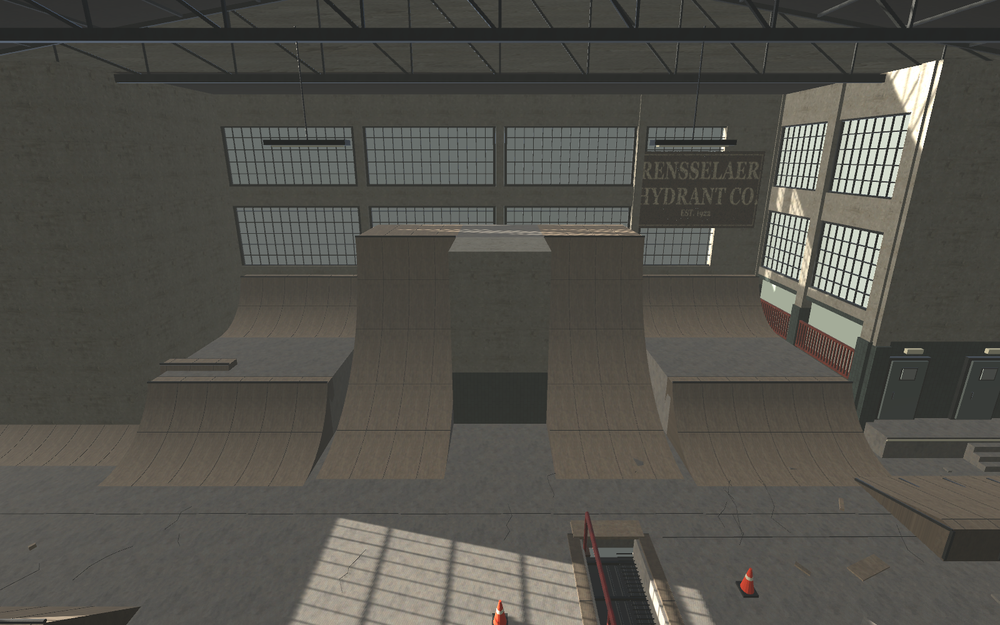
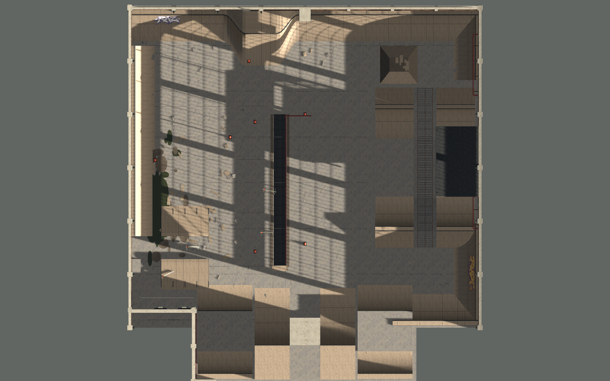
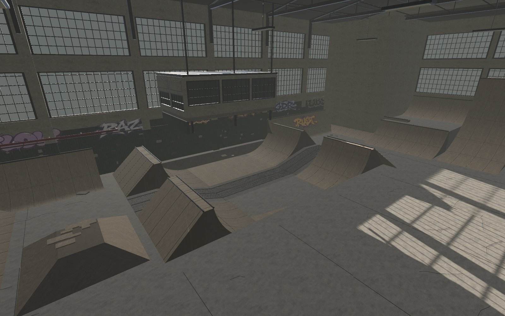
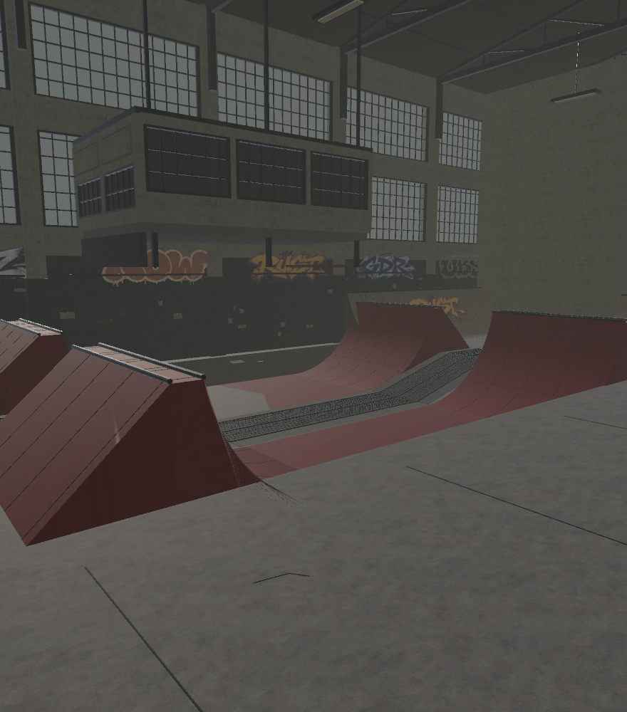
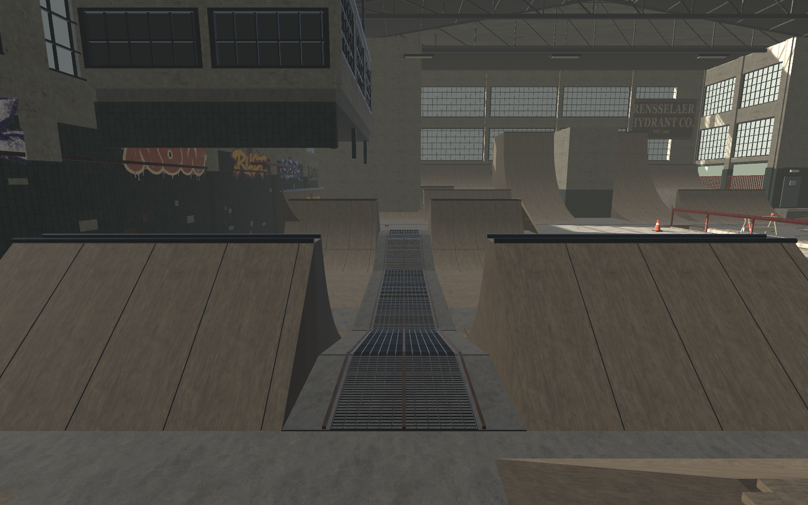
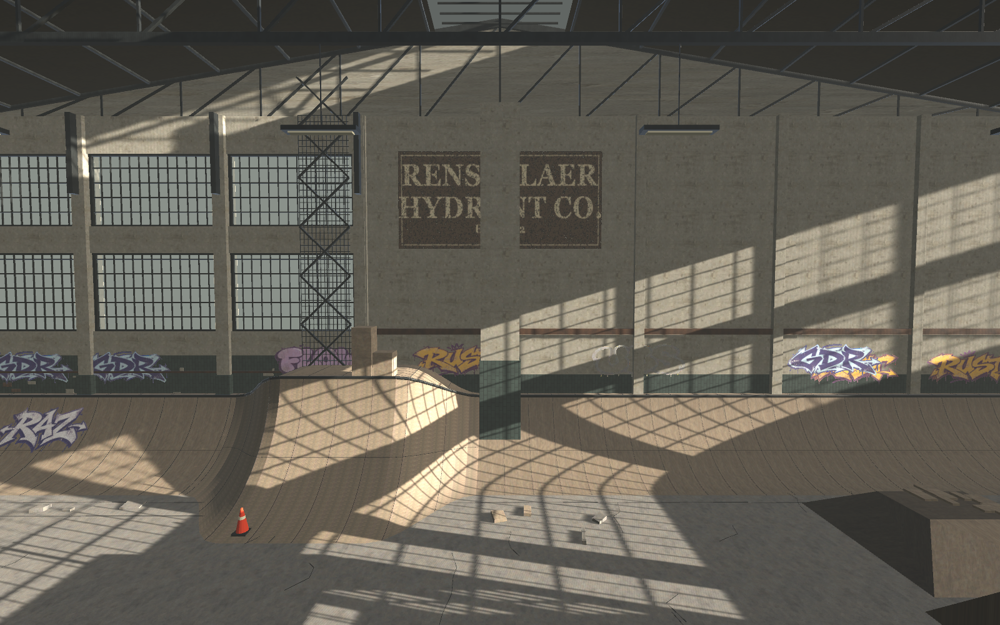

WAREHOUSE / USER STRUCTURAL CORRECTIONS / V9
双高坡、中央凸柱与办公室下凹坡组
依据本轮四张标注图及用户明确回答“同一面端墙左右对称”重建。V8 的单座高坡、横向半管和办公室北侧孤立方台不再作为正确结构。本页验证的是这次结构修正；旧版逐帧机位匹配结论已撤回，不能将旧机位直接视为新布局的精确视频机位。
同一面端墙 · 两座高坡左右对称

两座高坡以 X=0 对称，中心 X=±4.3 m，宽 4.6 m、高 7.5 m。中间凸柱宽 4 m，前脸凸到 Z=−19.7；后方 Z=−23.3…−27.8 的高台横向相通，7.5 m 以上留空。两外侧各有前坡、水平平台及后坡，中心 X=±10.5 m，尺寸相同。
这些尺寸是当前模型的估计值；“同墙左右对称”和“上方连通”来自用户确认。两端外侧建筑的门窗美术没有强行镜像。


办公室下方 · 顺蓝箭头方向重排


移除旧横向设施和孤立的 26B/26C 方台，坡组改为沿 Z 轴前后相对。每端两片木坡，中间留金属入口；每片坡朝内是较大的弧面，朝外是较短的斜面。内部木地板标高 −1.2 m，外部大厅地面为 0。两端各有较缓的入口坡通入低处。


真正凹下去的地板与两端小坡

原大厅大平板已分块，凹坑范围内的顶面被移除，底板及碰撞面一并下降。入口宽 3 m，格栅宽约 1.8 m；两端从 0 平缓下降到约 −1.18 m。内弧面由 −1.2 m 上升至 +2.0 m，外斜坡从大厅地面接至同一坡顶。
北墙正中 · 增加向厅内凸出的竖柱


保存和几何检查
| 项目 | 结果 |
|---|---|
| 双高坡与双层坡 | 左右曲面相同；两侧平台有支撑；中央高台可横向通过，上方未被墙封住。 |
| 下凹结构 | 凹坑底低于大厅；入口 210 个采样点通过，旧平板未遮挡入口；50 个曲面法线/碰撞采样通过。 |
| 保留设施 | 办公室楼板、凸出门台台阶、北端凸形高台和中央沟槽检查通过。 |
| 保存资产 | 保存后重开通过；79 个网格、106672 个三角形、47 个静态碰撞体；临时红蓝材质已恢复。 |
新增检查相机：Camera 26_TwinRollins、Camera 27_RecessedOfficePit、Camera 28_PitEntrySection、Camera 29_NorthCentrePier。这些相机为结构检查用，宽高比 1600:1000；其余旧相机保留供后续重新标定。
场景 Assets/Max/WarehouseRecreation.unity；原 MaxScene.unity 保留。修改前完整备份 Source~/BeforeSymmetryPitAudit~。尺寸、窗口、标牌与光照仍非精确复刻；未验证滑板/Leap Motion 实机操作、全路线连续滑行或重新配准所有视频机位。